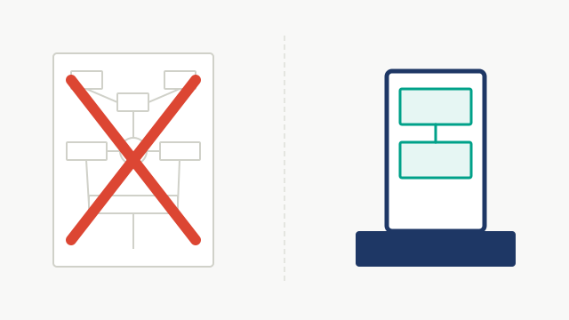
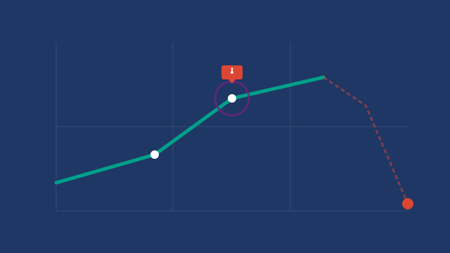
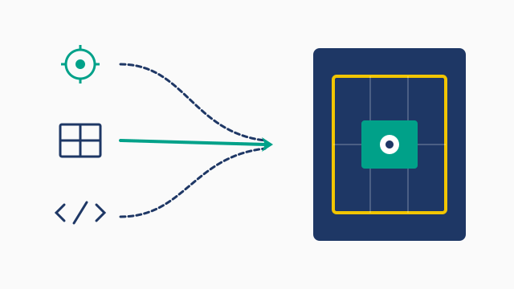

Software obeys instructions
instead of intentions
Most organizational problems eventually become technical problems after enough meetings. Most technical problems become organizational problems after enough PowerPoint.

Enterprise Reality
Architecture discussions become sociology
Every organization claims to value honesty — until it acquires a budget estimate. Requirements become negotiations between physics and optimism, and nothing scales faster than responsibility moving sideways.

Pattern Recognition
Every incident introduces itself politely first
Known issue. Corner case. Rare. User error. Low priority. Then production develops a different opinion, long after the dashboards stopped agreeing with it.

Software Engineering
Every abstraction promises simplicity. Most deliver archaeology
Automation doesn't remove mistakes — it helps mistakes discover parallel processing. Kubernetes has solved many important problems. Roughly half were created by Kubernetes.
Engagement
Choose whichever model procurement tolerates
The outcome remains approximately the same. Continue only if the problem survives contact with reality.
One hour, mostly spent discovering the original question was decorative. Usually confirms what everyone already suspected — now with diagrams.
- Problem diagnosis
- Architecture review
- Written summary
- Likely direction
- Technical reality check
Eventually someone has to replace the slide deck with software. History suggests this step is optional, but rarely stays that way.
- Software development
- Model building
- Data infrastructure
- Workflow automation
- Decision support
- Technical oversight
Attend meetings. Prevent future conference talks that begin with "Looking back, there were warning signs..."
- Technical advisory
- Architecture reviews
- Strategic direction
- Executive briefings
- Priority access
- Long-term guidance
- Ongoing refinement
Axioms
Things that remain true whether or not anyone likes them
"Every rewrite eventually becomes legacy."
"Every permanent solution began as 'just for now.'"
"The fastest database query remains deleting the dashboard."
Expertise
Recurring organizational phenomena
Patterns that reappear across engineering, analytics, infrastructure, and intelligent systems, regardless of the org chart drawn around them.
Repeated Questions